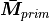

phonon¶
In this page, some formulation for phonon calculation
Crystal Rotaion for VASP¶
Twinpy can creates hexagonal twin structures and twin boundaries structures. After creating these structures, crystal standardization is take place for VASP calculation. After all necessary calculations are finished, it is interesting to compare with the structures which are a little bit different from each other corresponding to different shear strain ratio. However, before comparing, it is necessary to transform structures from the coordinates suitable for VASP calculations to the ones which are easiest to analize their difference.
Let, the shear lattice basis as is defined as
and let transformation matrix to standardized lattice, then
equivalently
Note in this stage, crystal body IS NOT ROTATED.
Next, let the conventional and primitive lattice of this crystal as and :
![[\boldsymbol{\bar{a}}_{std},
\boldsymbol{\bar{b}}_{std},
\boldsymbol{\bar{c}}_{std}]
=
[\boldsymbol{e}_x,
\boldsymbol{e}_y,
\boldsymbol{e}_z]
\boldsymbol{\bar{M}}_{std}](../_images/math/d871580ece78a6460909f00fb79ce1b16e5344a9.png)
and
Relation between and depends on lattice centering (you can find in spglib documentation ‘Definitions and conventions’)
equivalently
where indicates crystal body is rotated
from the original structure. Rotation matrix  is defined as
is defined as
equivalently

For summary